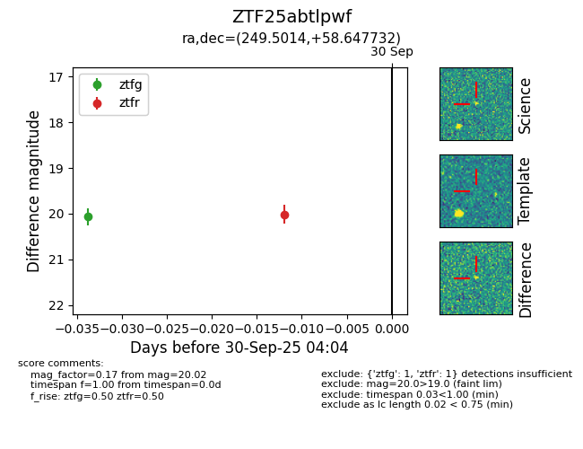

FINK: ZTF25abtlpwf
Lasair: ZTF25abtlpwf
ALeRCE: ZTF25abtlpwf
ZTF25abtlpwf (ztf,fink)
equatorial (ra, dec) = (249.5014,+58.64773)
galactic (l, b) = (88.3158,+40.09263)

last ztfg=20.06, ztfr=20.02
1 ztfg, 1 ztfr detections